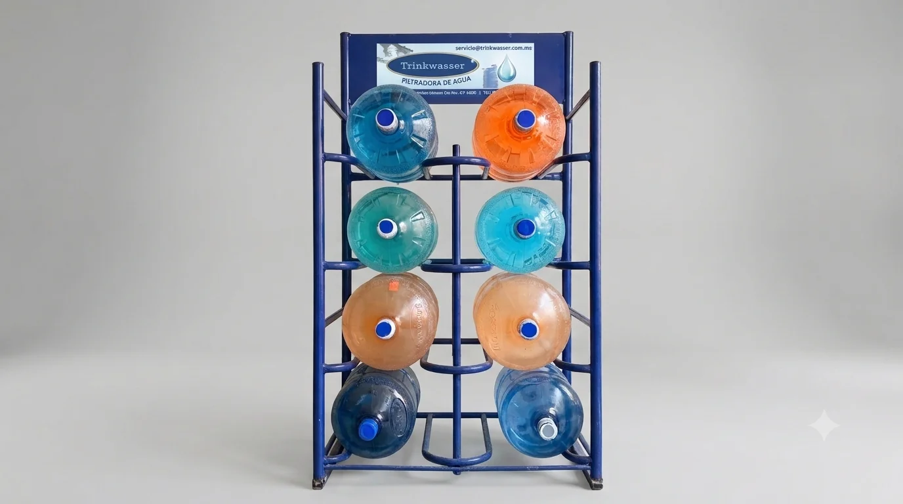

<!-- =============================
       PROCESO DE PURIFICACIÓN
  ============================== -->
  <section class="section process">
    <h2>Proceso de Purificación</h2>

    <div class="process-grid">
      <div class="step"><i class="fa-solid fa-filter"></i><p>Filtración de sedimentos</p></div>
      <div class="step"><i class="fa-solid fa-droplet"></i><p>Carbón activado</p></div>
      <div class="step"><i class="fa-solid fa-wand-magic-sparkles"></i><p>Luz ultravioleta</p></div>
      <div class="step"><i class="fa-solid fa-cloud"></i><p>Ozonización</p></div>
    </div>
  </section>

  <!-- =============================
       CARRUSEL DE LA PLANTA
  ============================== -->
  <section class="section">
    <h2>Conoce Nuestras Instalaciones</h2>

    <div class="carousel">
       
       
       
    </div>             
  </section>

  </body>
<script src="scripts/carousel.js"></script>
</html>
